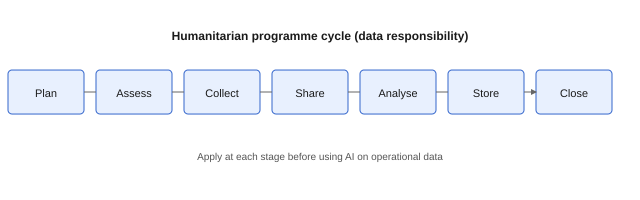

Data-responsibility checklist for AI tools
Use before entering any data into an AI tool. Aligns with IASC Operational Guidance on Data Responsibility (2023) and OCHA Data Responsibility Guidelines (January 2025).

Text equivalent: Plan, assess, collect, share, analyse, store, close. Apply at each stage before using AI on operational data. See visual aids.
Before you type
Safeguarding and protection
Primary sources: ICRC Handbook on Data Protection (3rd ed.); Core Humanitarian Standard (2024) (Commitment 5). Not legal advice.
During the task
After the output
Red flags: do not proceed
| Red flag | Why it matters |
|---|---|
| Beneficiary phone numbers in a public AI chat | Re-identification and privacy breach |
| Shelter locations tied to named individuals | Safety risk |
| Donor financial details | Confidentiality and fraud risk |
| Unvetted vendor with unclear data retention | Loss of control over sensitive data |
| GBV or child protection details in unapproved tools | Severe harm and policy breach |
Need help?
Escalate to your privacy lead, protection adviser, safeguarding or PSEA focal point, or IT security team. Amber and red decisions require organizational review, not individual judgment alone.
See Session 3 safeguarding module and facilitator guide for training-room escalation.